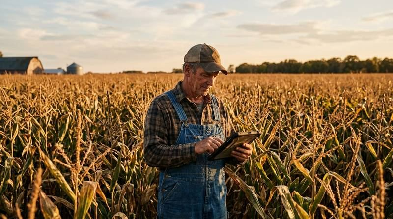

US Corn Belt Field Reality
🌾 THE REALITY ON THE GROUND
A Farmer’s Day Is a Battle
Every season, growers confront compounding environmental and economic pressures that no single intuition can outguess alone:
- • Prolonged Drought: Weeks without rain crack the topsoil while roots struggle to reach receding moisture.
- • Extreme Heatwaves: Peak temperatures during pollination can scorch yields in a matter of days.
- • Pests, Storms & Rising Costs: Sudden windstorms, pest outbreaks, and volatile fertilizer prices push farm ledgers into the red.